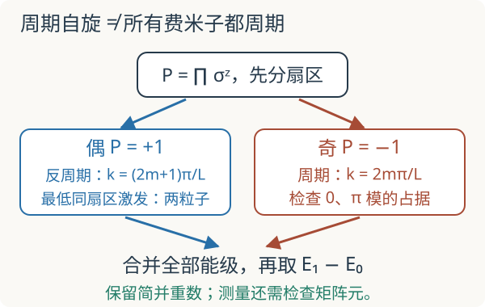

本页目录
基础衔接 06 · Ising 链的奇偶扇区：从自旋矩阵核对完整能隙
先修：二次量子化、量子临界。本讲固定偶数个自旋、周期边界、Pauli 本征值 ±1，实验只取 L=4 或 6。目标：算清 Jordan–Wigner 边界符号，并区分完整谱、固定扇区与单准粒子的低能尺度。
1. 同一条链，为什么能报出三个不同的“隙”？
沿用横场 Ising 模型
每条邻接键计一次。实验使用 L=4、6，避开 L=2 时“周期求和”会把同一对自旋计两遍的特殊约定。研究课给出的色散
描述准粒子能量，但周期自旋系统还要满足奇偶约束。我们分别定义：
- 完整隙 \(\Delta_{\rm spin}=E_1-E_0\)：合并全部自旋能级、按重数排序后取前两项；基态简并时此定义给零。
- 偶扇区内部隙 \(\Delta_+=E_{+,1}-E_{+,0}\)：只在奇偶值 +1 的子空间内排序。
- \(\epsilon_{\pi/L}\)：反周期费米子动量中的单准粒子尺度，未必对应允许的同扇区激发。
这三个定义不能在拟合或实验对比时互相替换。
2. 先不用费米子，就能把矩阵分成两块
定义全局奇偶算符 \(P=\prod_j\sigma_j^z\)。横场项与它对易；每条相邻耦合翻转两个自旋，与两个 \(\sigma^z\) 的反对易负号相乘后变成正号，所以 \([H,P]=0\)。
在 \(\sigma^z\) 基底中，用 \(b_j=0,1\) 分别表示本征值 +1、−1，令 \(n(b)=\sum_j b_j\)。矩阵作用是
\(P|b\rangle=(-1)^{n(b)}|b\rangle\)。因此把偶数个 1 与奇数个 1 的基矢分别收集，就得到两个 \(2^{L-1}\times2^{L-1}\) 实对称块。实验直接构造这两个自旋矩阵，不用色散公式填充能级。
例如 L=4 的 \(|0000\rangle\) 对角元是 \(-4g\)，四个非零跃迁分别到 \(|1100\rangle,|0110\rangle,|0011\rangle,|1001\rangle\)，系数都为 −1；它们仍在偶扇区。这个例子足以手工检查代码的键计数与场的符号。
3. Jordan–Wigner 的字符串怎样产生交换负号
取 \(\sigma^+=(\sigma^x+i\sigma^y)/2=|0\rangle\langle1|\)，定义
同一点上，\(c_j^\dagger c_j=(1-\sigma_j^z)/2\)，所以 1 对应一个费米子。不同点上，若 \(j<k\)，\(S_k\) 含有 \(\sigma_j^z\)，将 \(\sigma_j^+\) 穿过它恰好产生一个负号；其余不同点算符对易。于是 \(\{c_j,c_k\}=0\)、\(\{c_j,c_k^\dagger\}=\delta_{jk}\)。字符串负责保留费米交换结构。
令 \(A_j=c_j^\dagger+c_j=S_j\sigma_j^x\)，\(B_j=c_j^\dagger-c_j=-iS_j\sigma_j^y\)。对内部键，利用 \(S_{j+1}=S_j\sigma_j^z\) 与 \(\sigma^y\sigma^z=i\sigma^x\)，得到
周期边界不同：\(S_L=P\sigma_L^z\)，且 \(\sigma^z\sigma^y=-i\sigma^x\)，所以
完整 Hamiltonian 因而是
边界项中的 P 与二次乘积对易；固定到 \(P=p=\pm1\) 的扇区后，可用边界条件 \(c_{L+1}=-p c_1\) 将它记成统一的二次型。这里 p 是已选扇区的数值，不能在奇算符中随意交换全局算符 P。
于是偶扇区对应反周期动量 \(k=(2m+1)\pi/L\)，奇扇区对应周期动量 \(k=2m\pi/L\)。周期自旋并不意味着两个费米扇区都采用周期动量。

4. 能量对角化之后，奇偶约束仍然在
Bogoliubov 变换把 k 与 −k 配对。偶扇区中的配对真空保持偶性，只能加入偶数个准粒子，不能单独加入最低动量的一个准粒子后仍留在本扇区。对本讲模型，最低允许的一对是 \(\pm\pi/L\)，所以
奇扇区还包含不成对的 k=0、π 模。它们在变换前贡献
当 g 穿过 1 时，第一个系数变号，能量最低的 \(n_0\) 占据随之改变；求最低能时仍须满足总奇偶为奇。把所有模式都改成正能量、再毫无检查地选“零准粒子”，会丢失这条约束。完整自旋矩阵的分块对角化为这一细节提供了直接校验。
5. 四个自旋已足以看清差别
默认 J=1、g=1、L=4，两个块的最低能量约为
偶块第二能级为 \(-2.164784401\)，奇块第二能级为 \(-2\)（有简并）。合并后，完整第二能级来自奇块。因此
这不是数值算法意见不同，而是在回答三个不同的问题。
g=0 时，两种沿 x 完全有序的乘积态简并，取其对称与反对称组合分别落入两个奇偶扇区。完整隙按本讲定义是零，而偶扇区内部首次激发要产生一对畴壁、花费 4J；此时单准粒子尺度为 2J。仅这一个极限就否决了“三个隙总相等”的说法。
6. 接回临界缩放与测量选择
在 g=1 时，\(\epsilon_k=4J|\sin(k/2)|\)。令 \(x=\pi/(2L)\)，选动量在 \([0,2\pi)\)；两组有限和是
每个模式对真空能贡献 \(-\epsilon_k/2\)。周期组的 k=0 模此时能量为零，可以取满足奇性约束的占据而不增加能量。因此 \(E_{+,0}=-2J\csc x\)、\(E_{-,0}=-2J\cot x\)。相减并用 \((1-\cos x)/\sin x=\tan(x/2)\)，得到跨扇区最低劈裂
对照 \(\epsilon_{\pi/L}=4J\sin(\pi/2L)\sim2\pi J/L\)：它们都有 \(1/L\) 尺度，但前因子不同。这里的有限三角和来自几何级数 \(\sum_{m=0}^{L-1}e^{i(a+md)}=e^{ia}(1-e^{iLd})/(1-e^{id})\)，取虚部即可分别求出两组 \(\sin(k/2)\) 之和。实验的两个尺寸用于核对模型，不能单独证明临界普适类。
测量还受选择定则约束。若观测算符 O 与 P 对易，它只能连接同奇偶态；若与 P 反对易，则连接相反奇偶态。这可以由 \(\langle a|O|b\rangle=p_a p_b\langle a|O|b\rangle\)（对易情形）直接看出。\(\sigma^z_j\) 与 P 对易，\(\sigma^x_j\) 与 P 反对易。因此完整谱里最低的隙未必会出现在指定算符的响应谱中；还要计算矩阵元。接着读对易子与响应谱，才能把能级与可测吸收连接起来。
7. 两道迁移题
题一。 g=0 时，完整隙为零是否说明创建畴壁不耗能？为什么周期链中的首次局部缺陷要成对出现？
区分基态劈裂与畴壁激发
零隙指两种有序基态简并。每个反向邻接键相对一致键多花 2J；周期链绕行一圈必须回到起始方向，畴壁数为偶数，因此最少两个、能量 4J。基态重数与激发代价是不同信息。
题二。 若只计算偶扇区，并用一个与 P 对易的微扰驱动，能看到奇扇区最低能级吗？这会否定完整谱的存在吗？
检查算符选择定则
从偶态出发，该微扰的偶—奇矩阵元为零，所以不能直接激发奇态；这限制的是具体实验协议。完整谱仍包含奇态。改变为与 P 反对易的算符可以允许跨扇区跃迁，但允许并不保证每个具体矩阵元都非零。
速查与原始阅读
周期自旋先分 P=±1；偶扇区用反周期费米动量、奇扇区用周期动量；对角化后继续施加奇偶约束。完整谱、固定扇区和单准粒子尺度须分别标注。原始模型与边界修正的讨论见 Pfeuty 1970；原文自旋归一化与本讲 Pauli 约定不同。本讲直接矩阵、符号及数值均按文中约定核对。返回量子临界与有限尺寸。核查：2026-09-08。
后续诊断：全链方差与初态用双层MPO测H²，比较四个初态；两站点零方差激发态解释为何局部残差不能充当基态证书。